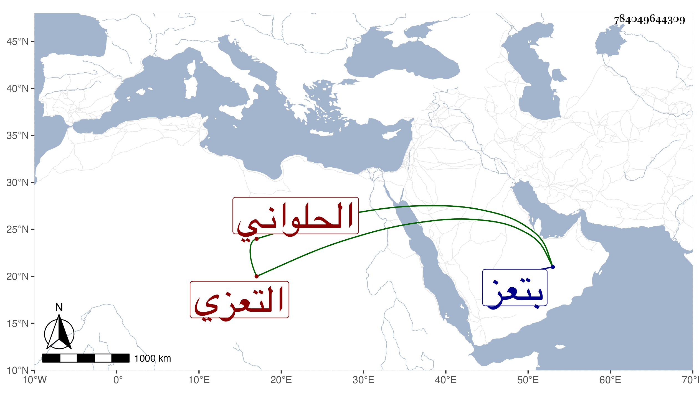

0902Sakhawi.DawLamic.ITO20230111-ara1.EIS1600.784049644309
Biography ID: 784049644309
132
أحمد بن علي شهاب الدين الحلواني التعزي السباك . ولد في حدود سنة خمس وثلاثين وثمانمائة ونشأ فأخذ عن جماعة أقدمهم الوجيه عبد الرحمن بن محمد المرغياني التعزي وتخرج بأبيه الجمال محمد وتميز ثم لازم القاضي الشمس يوسف ابن الجاي عالم الجبال في وقتنا وقرره علي بن طاهر في أماكن فأثرى وناب في القضاء ودرس بل وتصدى للإفتاء بتعز فأجاد وكان أديبا لبيبا ناسكا راغبا في الانجماع بمنزله . مات في سنة سبع وثمانين بتعز . أفاده لي بعض اليمانيين .
